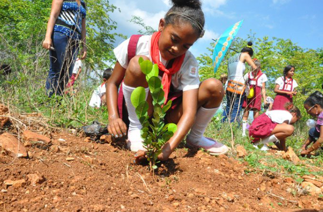

Tareas permanentes de las Universidades Cubanas
Posted by Owner • Filed under templates, internet
La reducción de desastres y la preservación del medio ambiente son tareas fundamentales y permanentes en las universidades cubanas, al igual que en muchas instituciones educativas en todo el mundo. Las universidades desempeñan un papel crucial en la educación, investigación y acción para abordar estos importantes temas de sostenibilidad y resiliencia ambiental.
En el contexto cubano, donde la isla está expuesta a diversos riesgos naturales como huracanes, inundaciones y sequías, la reducción de desastres es una prioridad para proteger a la población y los ecosistemas. Las universidades cubanas suelen estar involucradas en la investigación de riesgos naturales, la elaboración de planes de contingencia, la capacitación de profesionales en gestión de desastres y la sensibilización pública sobre la importancia de la preparación para emergencias.
En cuanto a la preservación del medio ambiente, las universidades en Cuba suelen llevar a cabo investigaciones científicas sobre la biodiversidad local, la conservación de los ecosistemas naturales, la gestión sostenible de recursos naturales, la mitigación del cambio climático y la promoción de prácticas ambientales responsables en la comunidad universitaria y más allá.
March 16, 2024 | Posted by Autor:"Tania García Torres"." Premian a defensores del medio ambiente en la UCI: 07 de Junio de 2013" | Archivado en https://www.uci.cu/premian-defensores-del-medio-ambiente-en-la-uci,

En la Jornada a favor del Medio Ambiente en la UCI, el estudiante Raúl Noa Pedroso, obtuvo reconocimiento especial por su ponencia Sitio Web “Cambia ahora”, a su vez, propuesta al Fórum de Ciencia y Técnica de la institución.
¿Cómo aspira la UCI a conseguir como universidad el Primer Premio Nacional del Medio Ambiente del CITMA?
La respuesta la tiene el Programa de cultura medio ambiental de este centro que intenta fomentar en la comunidad la protección y conservación de la naturaleza.